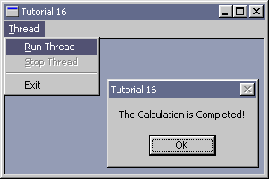

|
Tutorial 16 : Event Object
format PE GUI 4.0
entry start
include '%fasminc%\win32a.inc'
; +-----------------------+
; | menu item declaration |
; +-----------------------+
MI_THREAD_RUN equ 110
MI_THREAD_STOP equ 111
MI_EXIT equ 190
WMU_THREAD_FINISH equ WM_USER + 0x100
INFINITE equ 0xFFFFFFFF
section '.data' data readable writeable
wTitle db 'Tutorial 16',0
wClsName db 'TUT16',0
hWindow dd ?
hInstance dd ?
msg MSG
wc WNDCLASS
hMenu dd ?
hThread dd ?
hEvent dd ?
tId dd ? ;thread id
tEventState dd 0 ;thread event state, 0 = runnable, 1 = stop
info1 db 'The Calculation is Completed!',0
info2 db 'The Thread is Stop!',0
section '.code' code readable executable
start:
; +------------------------------+
; | registering the window class |
; +------------------------------+
invoke GetModuleHandle,NULL
mov [hInstance],eax
mov [wc.hInstance],eax
mov [wc.lpfnWndProc],window_procedure
mov [wc.lpszClassName],wClsName
mov [wc.lpszMenuName],30
mov [wc.hbrBackground],COLOR_WINDOW+1
invoke LoadIcon,NULL,IDI_APPLICATION
mov [wc.hIcon],eax
invoke LoadCursor,NULL,IDC_ARROW
mov [wc.hCursor],eax
invoke RegisterClass,wc
; +--------------------------+
; | creating the main window |
; +--------------------------+
invoke CreateWindowEx,\
WS_EX_CLIENTEDGE,\
wClsName,\
wTitle,\
WS_OVERLAPPEDWINDOW or WS_VISIBLE,\
CW_USEDEFAULT,\
CW_USEDEFAULT,\
300,\
200,\
NULL,\
NULL,\
[hInstance],\
NULL
mov [hWindow],eax
invoke GetMenu,eax
mov [hMenu],eax
; +---------------------------+
; | entering the message loop |
; +---------------------------+
window_message_loop_start:
invoke GetMessage,msg,NULL,0,0
or eax,eax
je window_message_loop_end
invoke TranslateMessage,msg
invoke DispatchMessage,msg
jmp window_message_loop_start
window_message_loop_end:
invoke ExitProcess,0
; +----------------------+
; | the window procedure |
; +----------------------+
proc window_procedure,hWnd,uMsg,wParam,lParam
push ebx esi edi
cmp [uMsg],WM_COMMAND
je wmCOMMAND
cmp [uMsg],WM_CREATE
je wmCREATE
cmp [uMsg],WMU_THREAD_FINISH
je wmuTHREAD_FINISH
cmp [uMsg],WM_DESTROY
je wmDESTROY
wmDEFAULT:
invoke DefWindowProc,[hWnd],[uMsg],[wParam],[lParam]
jmp wmBYE
wmuTHREAD_FINISH:
invoke MessageBox,NULL,info1,wTitle,MB_OK
jmp wmBYE
wmCREATE:
invoke CreateEvent,NULL,FALSE,FALSE,NULL
mov [hEvent],eax
mov eax,thread_procedure
invoke CreateThread,NULL,0,eax,NULL,NORMAL_PRIORITY_CLASS,tId
invoke CloseHandle,eax
jmp wmBYE
wmCOMMAND:
cmp [wParam],0xFFFF and MI_THREAD_RUN
je wmCOMMAND_MI_THREAD_RUN
cmp [wParam],0xFFFF and MI_THREAD_STOP
je wmCOMMAND_MI_THREAD_STOP
cmp [wParam],0xFFFF and MI_EXIT
je wmCOMMAND_MI_EXIT
jmp wmBYE
wmCOMMAND_MI_THREAD_RUN:
invoke SetEvent,[hEvent]
invoke EnableMenuItem,[hMenu],MI_THREAD_RUN,MF_GRAYED
invoke EnableMenuItem,[hMenu],MI_THREAD_STOP,MF_ENABLED
jmp wmBYE
wmCOMMAND_MI_THREAD_STOP:
mov [tEventState],1 ;stop
invoke EnableMenuItem,[hMenu],MI_THREAD_RUN,MF_ENABLED
invoke EnableMenuItem,[hMenu],MI_THREAD_STOP,MF_GRAYED
jmp wmBYE
wmCOMMAND_MI_EXIT:
invoke DestroyWindow,[hWnd]
jmp wmBYE
wmDESTROY:
invoke PostQuitMessage,0
wmBYE:
pop edi esi ebx
return
endp
; +------------------+
; | thread procedure |
; +------------------+
proc thread_procedure
invoke WaitForSingleObject,[hEvent],INFINITE
mov ecx,0xFFFFFFF
loopINIT:
cmp ecx,0
je loopEND
cmp [tEventState],0 ;runnable
je loopSTART
invoke MessageBox,[hWindow],info2,wTitle,MB_OK
mov [tEventState],0 ;runnable
jmp thread_procedure
loopSTART:
add eax,eax
dec ecx
jmp loopINIT
loopEND:
invoke PostMessage,[hWindow],WMU_THREAD_FINISH,NULL,NULL
invoke EnableMenuItem,[hMenu],MI_THREAD_RUN,MF_ENABLED
invoke EnableMenuItem,[hMenu],MI_THREAD_STOP,MF_GRAYED
jmp thread_procedure
return
endp
section '.idata' import data readable writeable
library KERNEL32, 'KERNEL32.DLL',\
USER32, 'USER32.DLL'
import KERNEL32,\
GetModuleHandle, 'GetModuleHandleA',\
CreateThread, 'CreateThread',\
CloseHandle, 'CloseHandle',\
CreateEvent, 'CreateEventA',\
SetEvent, 'SetEvent',\
WaitForSingleObject, 'WaitForSingleObject',\
ExitProcess, 'ExitProcess'
import USER32,\
RegisterClass, 'RegisterClassA',\
CreateWindowEx, 'CreateWindowExA',\
DefWindowProc, 'DefWindowProcA',\
LoadCursor, 'LoadCursorA',\
LoadIcon, 'LoadIconA',\
GetMenu, 'GetMenu',\
EnableMenuItem, 'EnableMenuItem',\
MessageBox, 'MessageBoxA',\
PostMessage, 'PostMessageA',\
GetMessage, 'GetMessageA',\
DestroyWindow, 'DestroyWindow',\
TranslateMessage, 'TranslateMessage',\
DispatchMessage, 'DispatchMessageA',\
PostQuitMessage, 'PostQuitMessage'
section '.rsrc' resource data readable
directory RT_MENU,appMenu
resource appMenu,\
30,LANG_NEUTRAL,menuMain
menu menuMain
menuitem '&Thread',0,MFR_POPUP + MFR_END
menuitem '&Run Thread',MI_THREAD_RUN,0
menuitem '&Stop Thread',MI_THREAD_STOP,0,,MF_GRAYED
menuseparator
menuitem 'E&xit',MI_EXIT,MFR_END
Result :

|